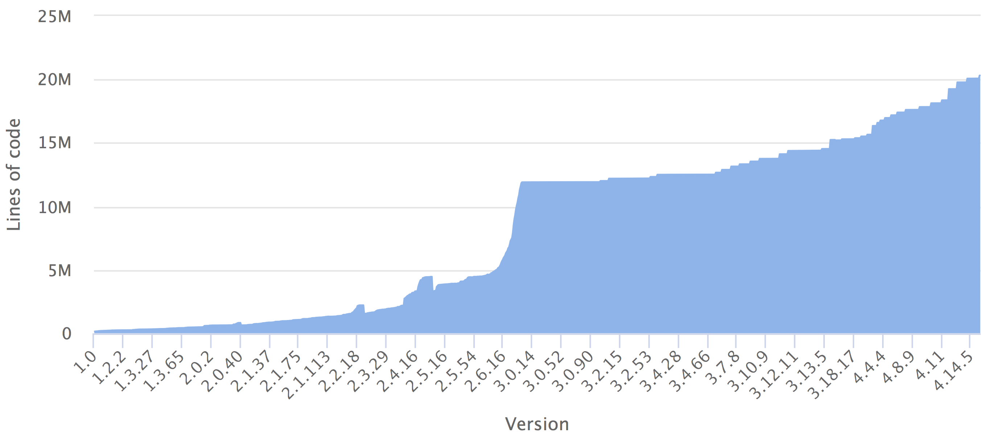
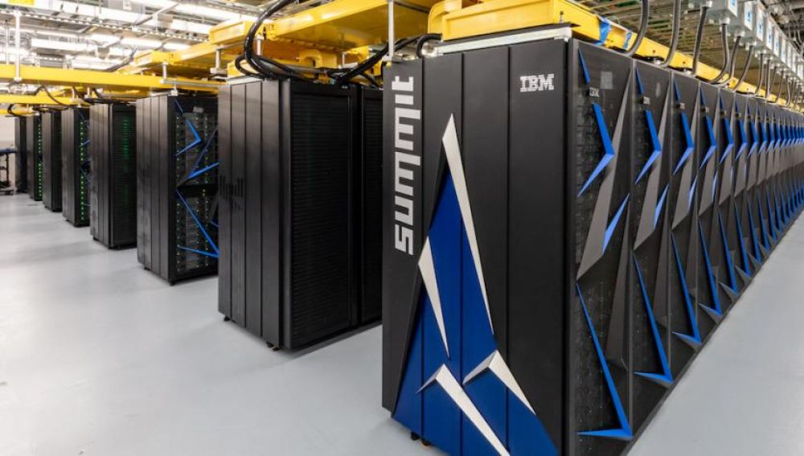
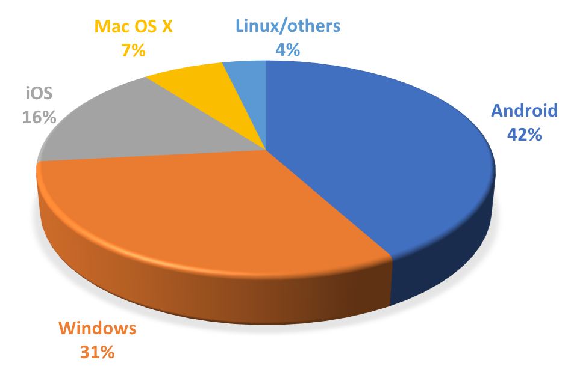
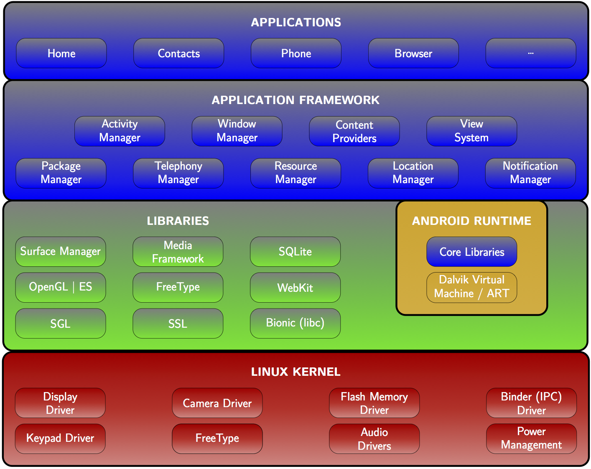
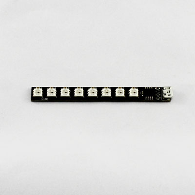
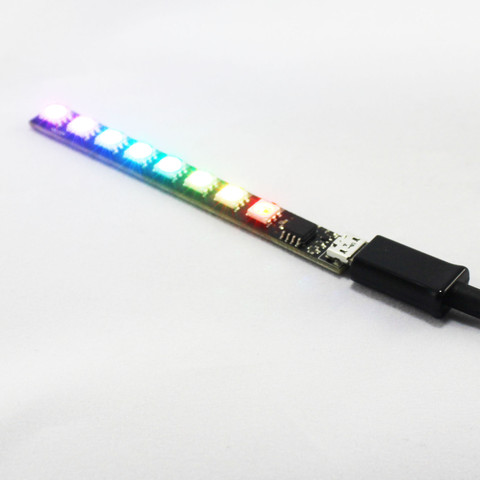
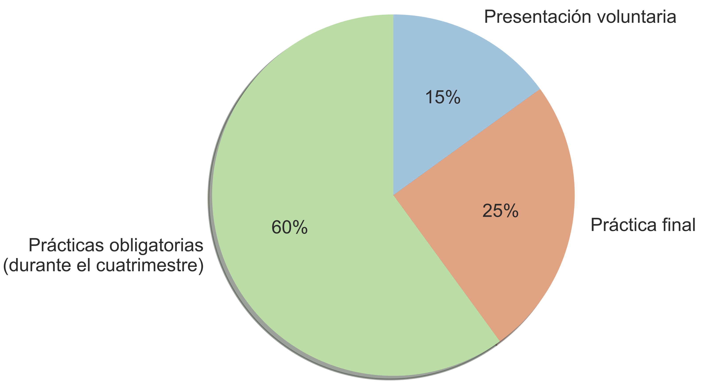

Arquitectura Interna de Linux y Android
Curso 2021-2022
Juan Carlos Sáez Alcaide
Sobre mí
Juan Carlos Sáez Alcaide (jcsaezal@ucm.es)
Prof. del Dpto. Arquitectura de Computadores y Automática
- Miembro del grupo de investigación ArTeCS
- Optimización de software de sistema para nuevas arquitecturas
- Computación de altas prestaciones
- Arquitectura de computadores
- …
- Representante en la UCM de la asociación internacional USENIX
- Login (USENIX Magazine) - link a ejemplares en PDF
Objetivo
- Estudio de aspectos avanzados de sistemas operativos
- 2 créditos de teoría + 4 créditos de lab
- Horario (Primer Cuatrimestre): X,V 14:00h-16:00h
Kernel Linux: evolución desde 1991
Líneas de código de las distintas versiones

Fuente: https://www.linuxcounter.net
Interactive map of the Linux kernel

Abstracciones comunes del kernel
Estructuras de datos del kernel
Implementación de llamadas al sistema
Gestión de memoria dinámica
kmalloc(),vmalloc(),kfree(),vfree()
Mecanismos para diferir el trabajo
Temporizadores del kernel
Pseudo sistemas de ficheros: /proc, /sys
Mecanismos de sincronización en el kernel
…
¿Por qué aprender Linux?
- Usado en los 500 supercomputadores más potentes del mundo

Uso de sistemas operativos
Android OS está basado en el kernel Linux

Android: a Linux-based OS

Programa
- Módulo 1: Introducción
- Historia Unix/Linux y Estructura del SO
- Uso avanzado de módulos del kernel Linux
- Módulo 2: Llamadas al sistema
- Compilación del kernel Linux
- Módulo 3: Drivers USB
- Módulo 4: Gestión de Procesos
- Gestión de procesos en Linux
- Mecanismos de sincronización del kernel
- Módulo 5: Gestión de interrupciones y trabajos diferidos
- Softirqs, Tasklets, Workqueues y Temporizadores del kernel
- Módulo 6: Arquitectura Interna de Android
- Introducción a Android: Componentes, Android vs. GNU/Linux
- Procesos en Android, Kernel y Native Userspace
Prácticas
- Sobre una Máquina Virtual de GNU/Linux
- Programación en “C” en modo kernel
- … casi siempre con módulos cargables del núcleo
- 5 prácticas
- Uso avanzado de módulos del kernel
- Implementación de llamadas al sistema
- Desarrollo de driver para un dispositivo USB
- Gestión de procesos y sincronización en el kernel
- Gestión de interrupciones y trabajos diferidos
Prácticas
En la práctica 3 se desarrollará un driver en Linux para el dispositivo Blinkstick Strip (USB)


Método de evaluación
Dos modalidades a elegir
- Examen final:
- NotaFinal=NotaExamen
- Evaluación continua:
- Asistencia obligatoria

Presentación disponible en http://bit.ly/2wJ4fqH